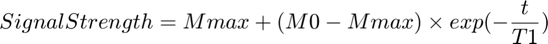
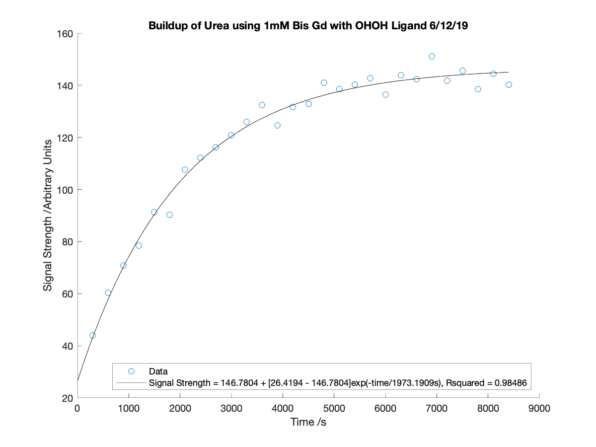

Generating a Scatter Plot from a Buildup with a Curve Overlaid with Calculated Mmax, M0 and T1 Parameters
Contents
- Inputs
- Alternative Inputs
- Output
- Child Function
- Verifying x and y Exist and are Valid
- Generating x and y if Invalid or Non-Existent and Calculating T1, Mmax, M0 and Rsquared
- Verifying Data is Labelled
- Displaying the Equation for the Fitted Exponential Curve
- Setting the Title of the Figure
- Generating a Scatter Plot of the Buildup Data with Fitted Curve
- Notes
Inputs
x: is a column vector containing the times each measurement was taken
y: is an array containing the signal strength at each time measured. Values for different peaks go in different columns
peaknames: is a cell containing the names of each NMR peak measured
titl: is the title of the scatter plot (character vector)
Alternative Inputs
sys: is 'Y' if the data was collected using the Alpha System or 'N' if the data was collected using the Hypersense
dat: depending on how the data was collected, dat is:
a cell containing the .txt output of AMARES (Alpha System)
a .csv output file using the custom integration output using counts and values comma delimited from MestReNova (Alpha System)
a .dat file outputted from using the Hypersense containing comma delimited data
proc: is the procpar file, which is used to find the times measured (Alpha System only)
inp: is 'A' if the data was processed with JMRUI AMARES or is 'M' if the data was processed using MestReNova (Alpha System only)
coilnum: if the data was processed using MestReNova, it is the number of coils used to collect the data
field: is a cell containing the names of the peaks from which data was collected if the data was processed using MestReNova
Output
A scatter plot of the buildup data with a curve overlaid obeying the following relation:

Child Function
BuildupParamCalc: Calculates T1, Mmax and M0 from the buildup data. It also calculates the coefficient of determination (CODs) from the fit of the calculated parameters and if x and y were not inputted/were invalid, it yields x and y too
function expregress(x,y,peaknames,titl,sys,dat,proc,inp,coilnum,field)
boolxy = 1;
Verifying x and y Exist and are Valid
x and y must both be populated arrays that contain the same number of rows
if nargin < 2 boolxy = 0; elseif isempty(x) == 1 boolxy = 0; elseif isempty(y) == 1 boolxy = 0; elseif length(x) ~= length(y) boolxy = 0; end
Generating x and y if Invalid or Non-Existent and Calculating T1, Mmax, M0 and Rsquared
if boolxy == 0 if nargin == 10 [T1,Mmax,M0,CODs,x,y] = BuildupParamCalc([],[],sys,dat,proc,inp,coilnum,field); elseif nargin == 9 [T1,Mmax,M0,CODs,x,y] = BuildupParamCalc([],[],sys,dat,proc,inp,coilnum); elseif nargin == 8 [T1,Mmax,M0,CODs,x,y] = BuildupParamCalc([],[],sys,dat,proc,inp); elseif nargin == 7 [T1,Mmax,M0,CODs,x,y] = BuildupParamCalc([],[],sys,dat,proc); elseif nargin == 6 [T1,Mmax,M0,CODs,x,y] = BuildupParamCalc([],[],sys,dat); elseif nargin == 5 [T1,Mmax,M0,CODs,x,y] = BuildupParamCalc([],[],sys); else [T1,Mmax,M0,CODs,x,y] = BuildupParamCalc; end else [T1,Mmax,M0,CODs] = BuildupParamCalc(x,y); end
Local minimum possible. lsqcurvefit stopped because the final change in the sum of squares relative to its initial value is less than the value of the function tolerance.
Verifying Data is Labelled
The peaknames variable contains the names of the data collected (the names of the peaks) from the buildup experiment. If the variable is invalid or not inputted, it is by default, set to 'Data'.
if nargin < 3 peaknames = {'Data'}; elseif string(class(peaknames)) ~= "cell" peaknames = {'Data'}; end numpeak = length(y(1,:)); equ = cell(numpeak,1);
Displaying the Equation for the Fitted Exponential Curve
The parameters calcualted from BuildupParamCalc are used to generate the full equation describing the exponential curve, which will later be displayed on the plotted curve.
for el = 1:numpeak sMmax = num2str(Mmax(el)); sM0 = num2str(M0(el)); sT1 = num2str(T1(el)); equ{el} = strcat('Signal Strength =', {' '}, sMmax, {' '}, '+ [', sM0, {' '}, '-', {' '}, sMmax, ']exp(-time/', sT1, 's)'); end
Setting the Title of the Figure
If no title is given, a default title is given
if nargin < 4 titl = 'Signal Strength vs. Time'; elseif ischarvec(titl) ~= 1 titl = 'Signal Strength vs. Time'; end
Generating a Scatter Plot of the Buildup Data with Fitted Curve
figure('Position',[0 0 600 450]) scatter(x,y(:,1)) hold on inter = max(x)*0.01; x1 = 0:inter:max(x); y1 = Mmax(1) + (M0(1)-Mmax(1)).*exp(-x1./T1(1)); if numpeak == 1 plot(x1,y1,'k') else plot(x1,y1) end if numpeak > 1 for el = 2:numpeak scatter(x,y(:,el)) y1 = Mmax(el) + (M0(el)-Mmax(el)).*exp(-x1./T1(el)); plot(x1,y1) end end legpeaks = cell(2*numpeak,1); for el = 1:2:(2*numpeak) legpeaks{el} = peaknames{el}; legpeaks{el+1} = char(strcat(equ{el}, {', '}, 'Rsquared =', {' '}, num2str(CODs(el)))); end legend(legpeaks,'Location','southeast') xlabel('Time /s') ylabel('Signal Strength /Arbitrary Units') title(titl)
end
Notes
The inputs used in the example are:
x: []
y: []
peaknames: []
titl: 'Buildup of Urea using 1mM Bis Gd with OHOH Ligand 6/12/19'
sys: 'Y'
dat: {'BuildupUreaOHOH_06_12_19_2_2.txt'}
proc: 'procpar06_12_19_Buildup2_1'
inp: 'A'
The example was run by putting:
expregress([],[],[],'Buildup of Urea using 1mM Bis Gd with OHOH Ligand 6/12/19','Y',{'BuildupUreaOHOH_06_12_19_2_2.txt'},'procpar06_12_19_Buildup2_1','A')
into the command window